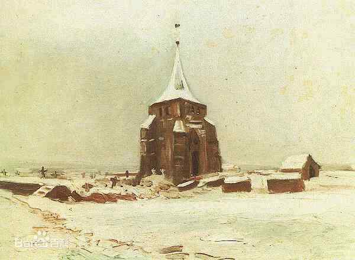

文森特·威廉·梵高（Vincent Willem van Gogh，1853年3月30日—1890年7月29日）， 荷兰后印象派画家。代表作有《星月夜》、自画像系列、向日葵系列等。 梵高出生于1853年3月30日荷兰乡村津德尔特的一个新教牧师家庭，早年的他做过职员和商行经纪人， 还当过矿区的传教士最后他投身于绘画。他早期画风写实，受到荷兰传统绘画及法国写实主义画派的影响。 1886年，他来到巴黎，结识印象派和新印象派画家，并接触到日本浮世绘的作品，视野的扩展使其画风巨变。 1888年，来到法国南部小镇阿尔，创作《阿尔的吊桥》；同年与画家保罗·高更交往， 但由于二人性格的冲突和观念的分歧，合作很快便告失败。此后，梵高的疯病（有人记载是“癫痫病”）时常发作， 但神志清醒时他仍然坚持作画。1889年创作《星月夜》。1890年7月，梵高在精神错乱中开枪自杀，年仅37岁。

